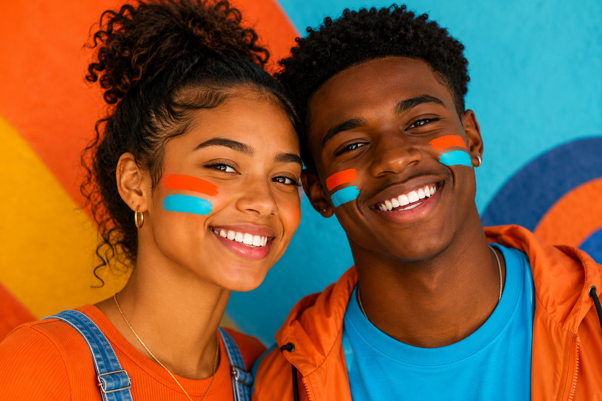
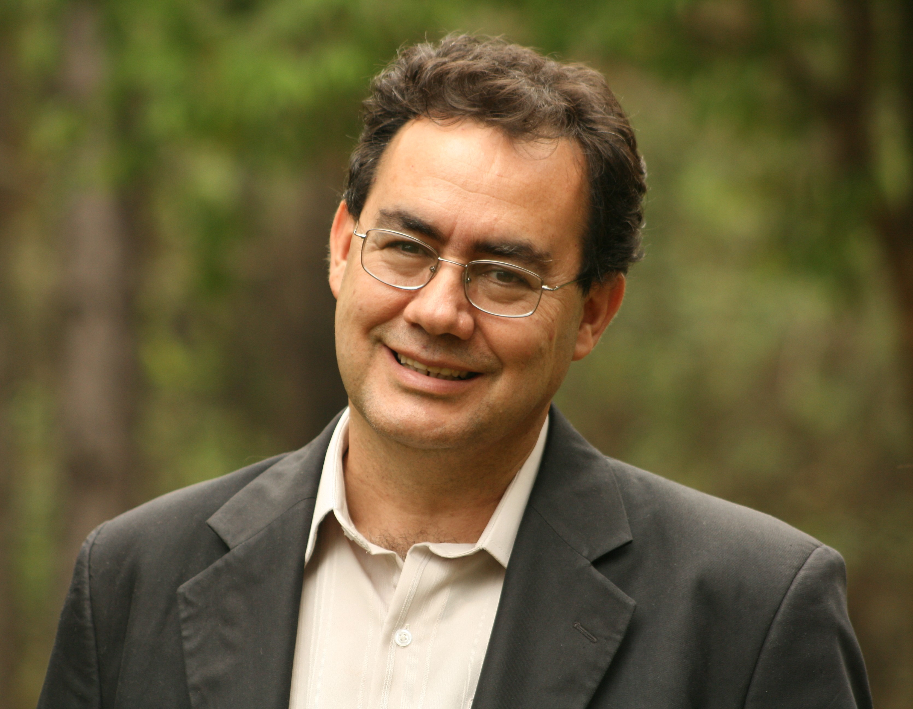
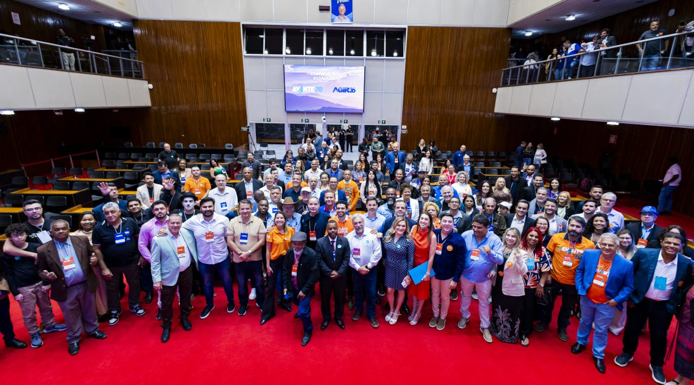
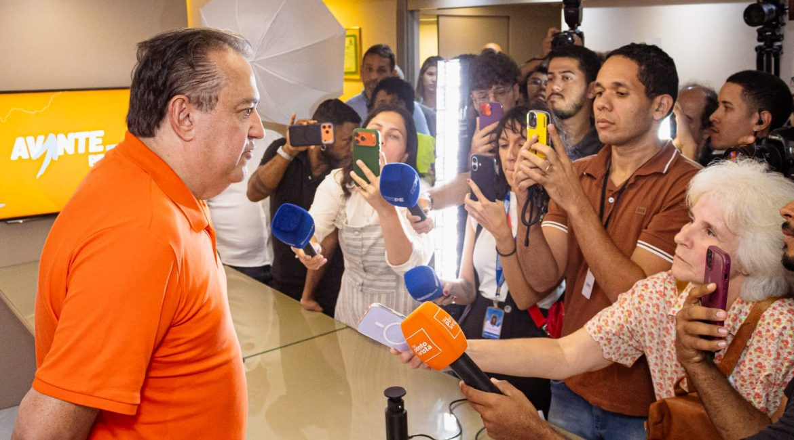
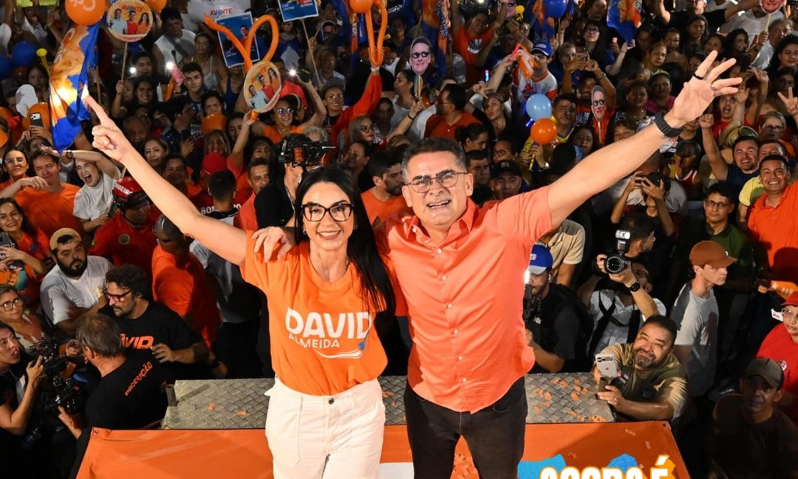
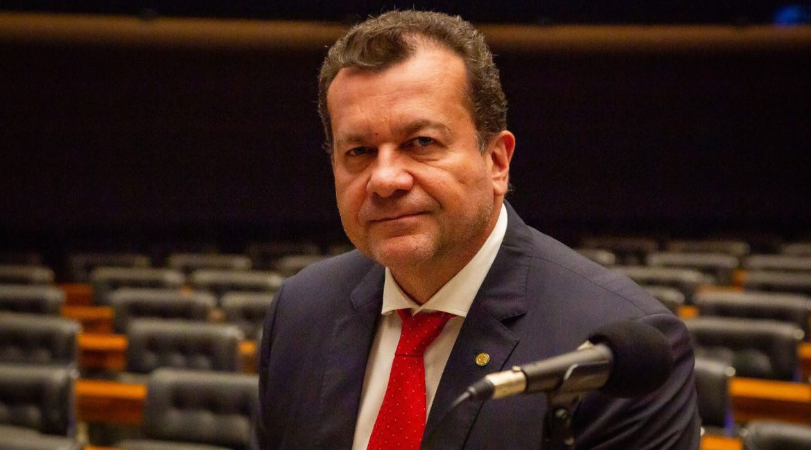
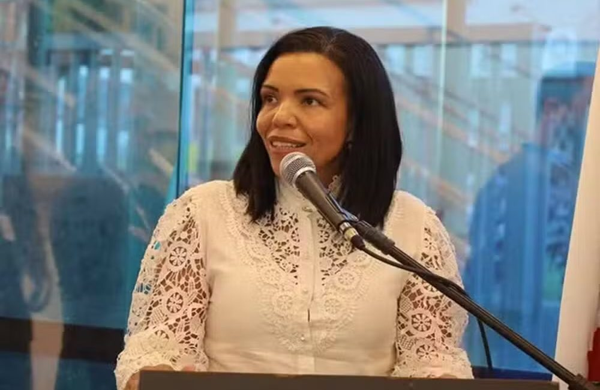
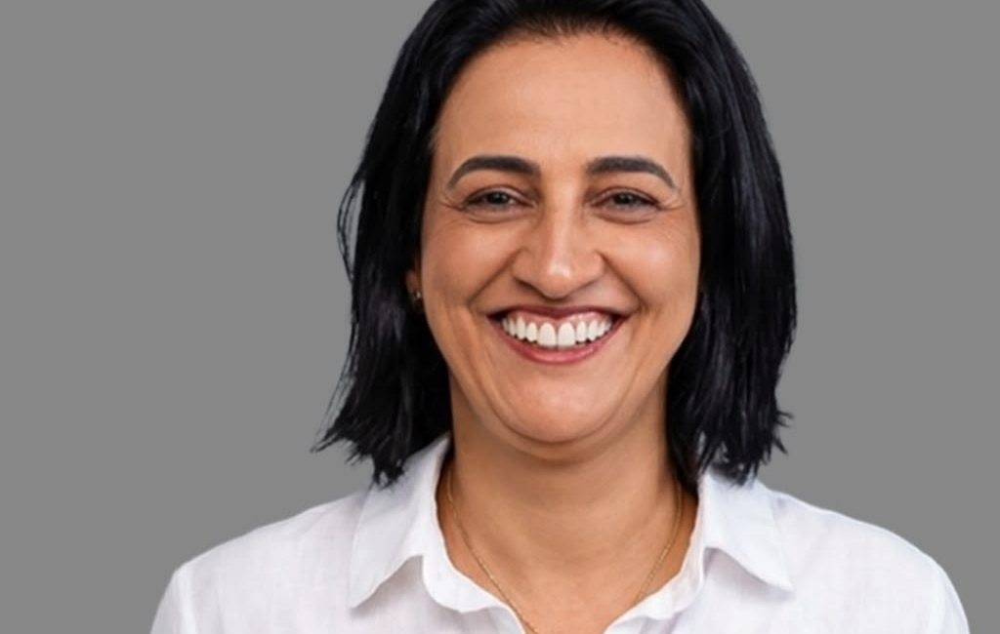

Representatividade
Mais pessoas negras e pardas nos espaços de decisão, da comunidade ao Congresso Nacional.

Um movimento do Brasil real
Avante Afro nasce para fortalecer a presença de negros e pardos na política e transformar representação em poder de decisão.

Do território
para a política
Por que existimos
A maioria do povo brasileiro é negra ou parda. Essa força precisa estar presente onde as escolhas sobre o nosso futuro são feitas.
Somos uma articulação para ouvir territórios, preparar lideranças e construir uma agenda política antirracista, democrática e conectada à vida real.
Veja nossos compromissos →Mais pessoas negras e pardas nos espaços de decisão, da comunidade ao Congresso Nacional.
Conhecimento, rede e preparo para novas lideranças transformarem seus territórios.
Políticas públicas que enfrentem desigualdades e ampliem caminhos para toda a população.

ELEIÇÕES 2026Apoiamos Augusto Cury
Em 9 de junho de 2026, o Avante Maranhão realizou, em São Luís, o lançamento da pré-candidatura de Augusto Cury à Presidência da República.
Segundo o comunicado oficial do partido, o encontro reuniu dirigentes, parlamentares, prefeitos, vereadores e representantes de diferentes segmentos da sociedade.
Ler anúncio oficial ↗ Informação reproduzida do site oficial do Partido Avante.Agenda de futuro
Uma agenda aberta ao diálogo, construída com quem conhece de perto os desafios e as potências de cada território.
Formação de lideranças
Uma jornada de formação para pessoas negras e pardas que querem atuar na política, liderar causas e representar suas comunidades.
Chegue junto
Conecte-se ao Avante Afro e receba novidades sobre encontros, formação e mobilização.
Avante pelo Brasil






Conteúdo e imagens reproduzidos do site oficial do Partido Avante.